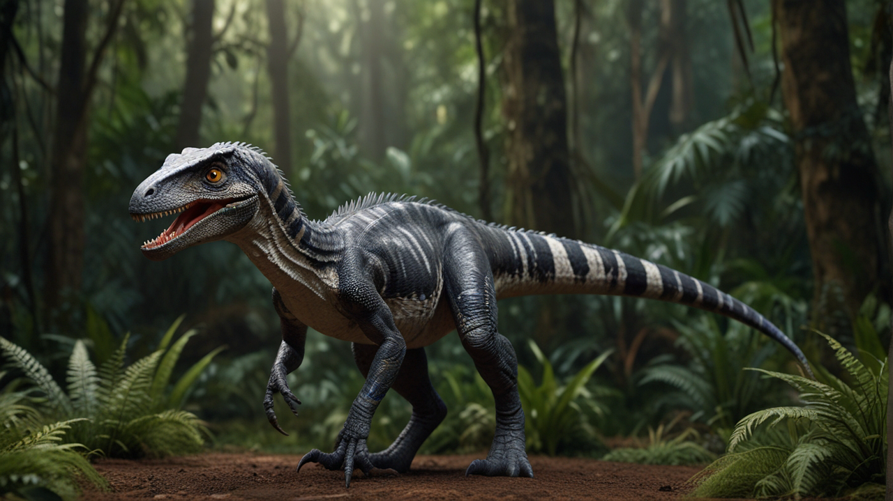
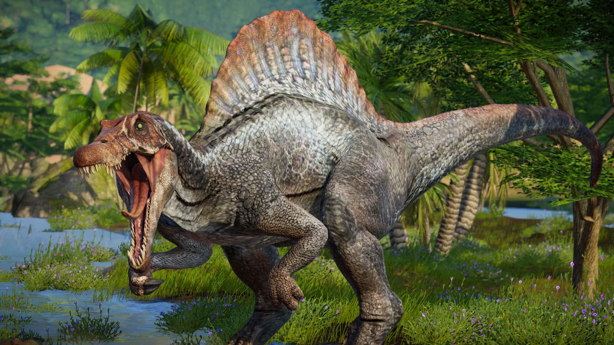
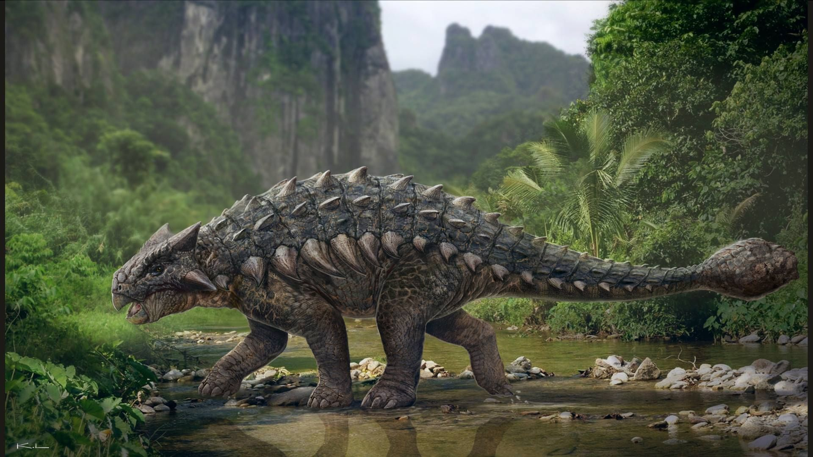
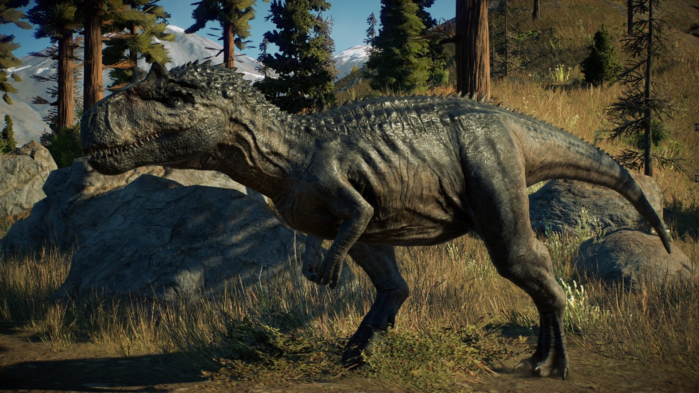
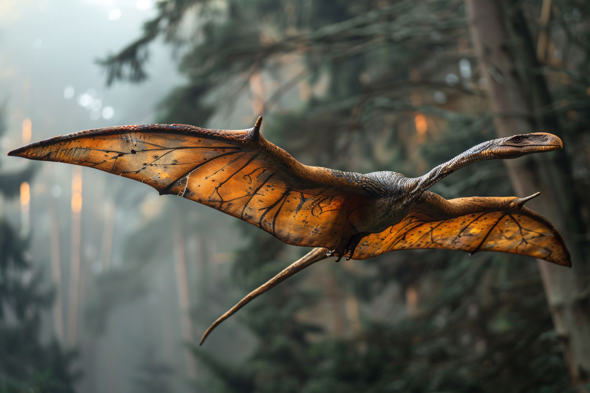
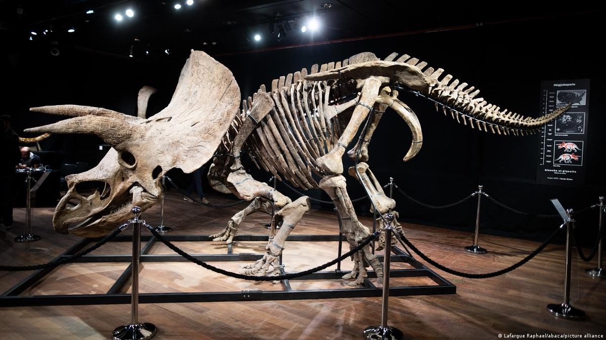
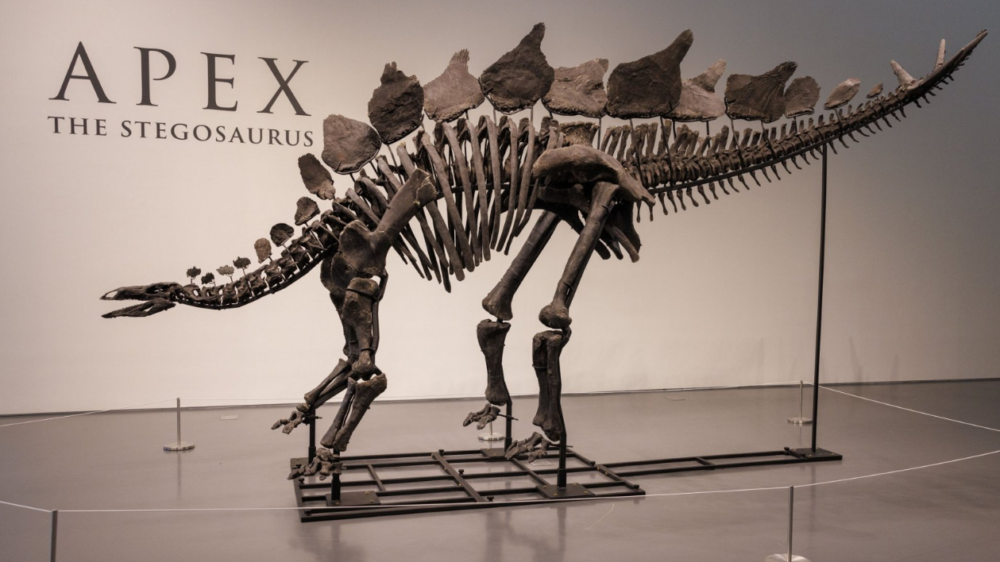
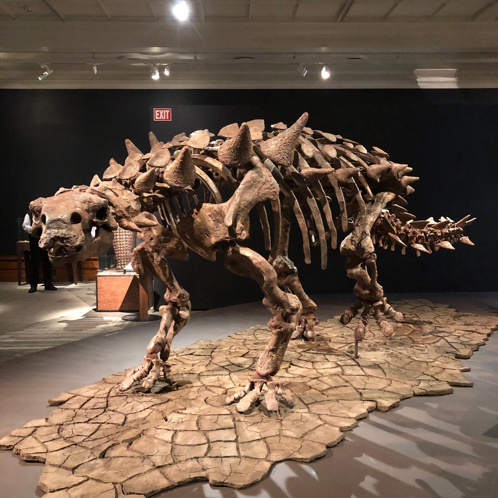
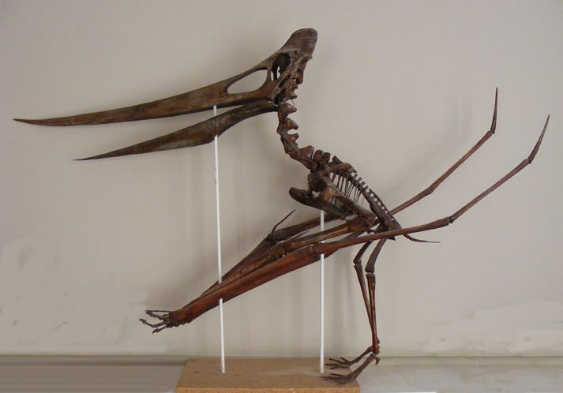

Creatures of the Jurassic Age

Tyrannosaurus Rex
- Period: Late Cretaceous
- A massive predator with strong jaws and teeth.
Ruled the land as one of the most feared hunters.
Fossils found mainly in North America.

Brachiosaurus
- Period: Late Jurassic
- A tall, long-necked herbivore that ate from treetops.
Walked on four legs with longer front limbs.
One of the tallest dinosaurs ever known.

Triceratops
- Period: Late Cretaceous
- Had three facial horns and a large bony frill.
Lived in herds and moved across open plains.
One of the last great dinosaurs before extinction.

Velociraptor
- Period: Late Cretaceous
- A small, fast, and intelligent hunter.
Used its sharp claws for catching prey.
Feathered and bird-like in appearance.

Stegosaurus
- Period: Late Jurassic
- Famous for the plates along its back.
Used its spiked tail for protection.
Moved slowly and fed on low plants.

Spinosaurus
- Period: Cretaceous
- The largest known carnivorous dinosaur.
Had a sail-like spine and long crocodile-like snout.
Lived near rivers and hunted fish.

Ankylosaurus
- Period: Late Cretaceous
- A heavily armored plant-eater.
Had a clubbed tail for defense.
Its body was covered in thick bony plates.

Allosaurus
- Period: Late Jurassic
- A fierce predator before T-Rex appeared.
Had sharp teeth and curved claws.
Often hunted in packs.

Pteranodon
- Period: Late Cretaceous
- Not a dinosaur, but a flying reptile.
Had a large wingspan and toothless beak.
Glided over oceans to catch fish.
Uncover the secrets buried in fossils

Tyrannosaurus Rex
- The specimen known as “Sue,” discovered in South Dakota, represents the most complete and
best-preserved T. rex fossil to date. It provides crucial data on skeletal structure, muscle
attachment, and predator biomechanics during the Late Cretaceous period.

Brachiosaurus
- Fossils attributed to Brachiosaurus and its close relative Giraffatitan from Tanzania offer
significant insight into sauropod anatomy. These remains illustrate adaptations for vertical
browsing and unique limb proportions among large Jurassic herbivores

Triceratops
- The “Big John” specimen, the largest known Triceratops, displays exceptional cranial
preservation. It has contributed to the understanding of horn morphology, frill function, and
intraspecific behavior within Ceratopsidae.

Velociraptor
- The “Fighting Dinosaurs” specimen from Mongolia preserves a Velociraptor and Protoceratops
locked in combat. This fossil offers direct evidence of predatory behavior, feathered anatomy,
and ecological interactions within the Late Cretaceous desert .

Stegosaurus
- The “Sophie” skeleton represents the most complete Stegosaurus ever found. Its exceptional
articulation has clarified vertebral configuration, plate arrangement, and locomotor
biomechanics of early armored dinosaurs.

Spinosaurus
- TRecent Moroccan fossils from the Kem Kem beds have redefined the profile of Spinosaurus. The
remains confirm semi-aquatic adaptations, elongated neural spines, and limb modifications
associated with piscivorous ecology.

Ankylosaurus
- The Zuul crurivastator specimen, a close relative of Ankylosaurus, retains armor, keratinous
scales, and soft-tissue impressions. These fossils have advanced research on dermal defense
structures and evolutionary development of tail clubs.

Allosaurus
- AThe “Big Al” specimen from Wyoming provides an almost complete skeleton exhibiting multiple
healed injuries. It serves as a primary reference for theropod pathology, growth patterns, and
predator behavior in the Late Jurassic ecosystem.

Pteranodon
- Fossils from the Niobrara Formation in Kansas preserve numerous articulated skeletons of
Pteranodon. These remains are essential to understanding flight dynamics, crest variation, and
sexual dimorphism in Late Cretaceous pterosaurs.
About
Welcome to our world of Dinosaurs and Fossils — a journey back in time to when giant creatures ruled the
Earth. This website is designed to share knowledge about different dinosaur species, their fossils, and
how they shaped the planet's history.
Here, every page brings you closer to understanding ancient life, from towering herbivores to fierce
predators, and the fossils that keep their stories alive.
This project reflects a passion for ancient history, nature, and science — connecting curiosity with creativity. We hope this website inspires others to learn more about the incredible creatures that shaped our planet long before humans existed.